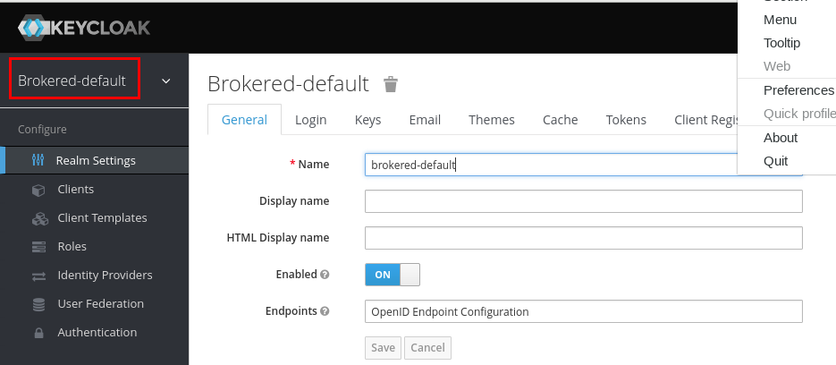
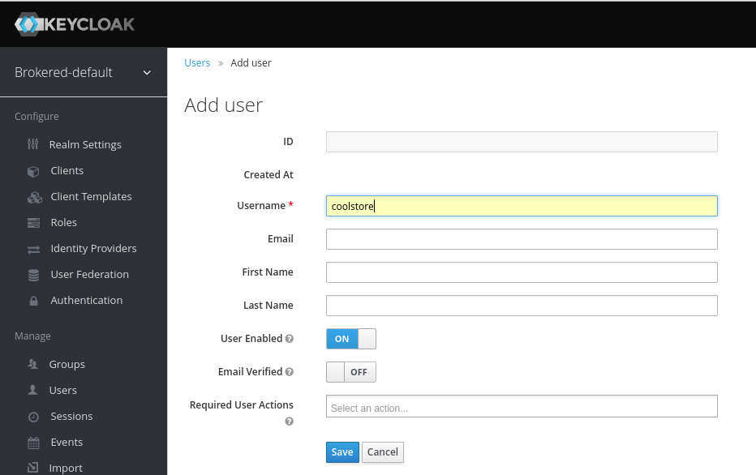
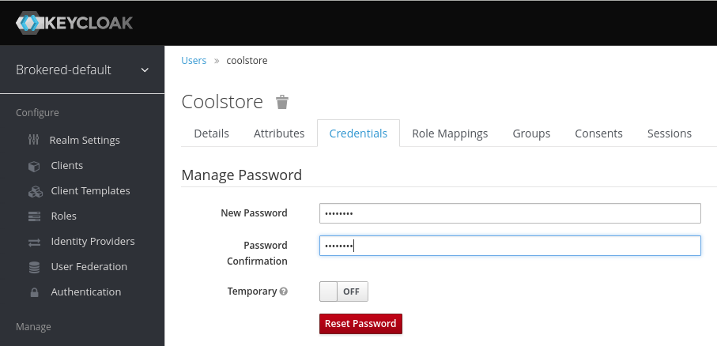
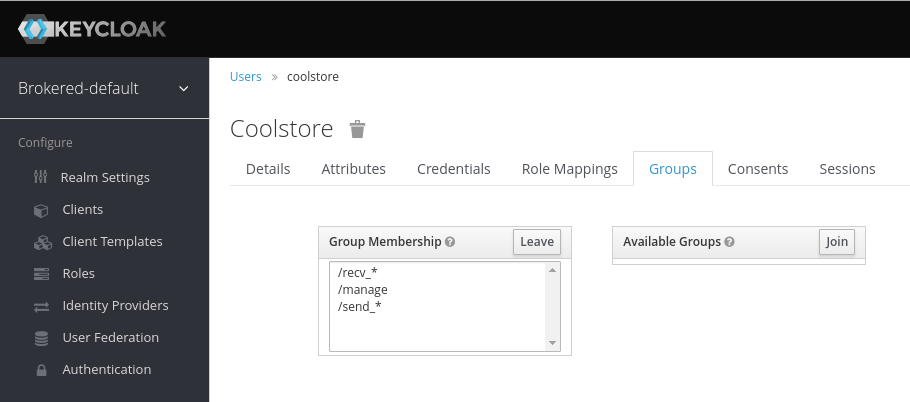
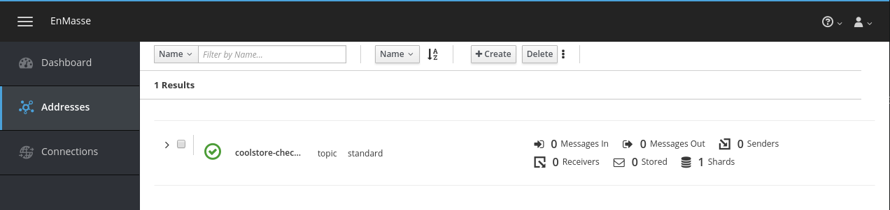
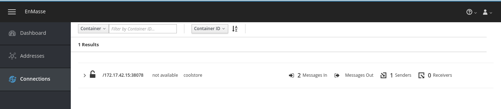

Asynchronous Communication Lab
The microservices developed in the previous labs all used REST over HTTP to communicate with each other. In this lab, you will use messaging to exchange information between microservices.
In this lab, you use EnMasse as messaging infrastructure solution. EnMasse is an open source messaging platform that runs on OpenShift. It is based on AMQ 7 (Apache ActiveMQ Artemis and Apache Qpid Dispatch Router). Enmasse is the upstream for the soon-to-be-released Red Hat OpenShift Messaging product.
-
Update the cart service application to send messages to a topic hosted on EnMasse upon cart checkout.
-
Develop a prototype checkout service to consume the messages from the EnMasse topic.
-
Deploy the applications to OpenShift
-
Completion of the Spring Boot lab
|
Note
|
The labs in this module use the original application code as starting point, without the modifications added by the previous labs. Before starting the lab, make fresh clones of the lab source code material and redeploy the different microservice applications using the Fabric8 Maven plugin. Alternatively, create separate branches in the lab source code for the different labs. |
1. Deploy EnMasse on OpenShift
EnMasse is the upstream project of Red Hat OpenShift Messaging (RHOM), which has not been released yet. In this lab you will use the upstream EnMasse project.
EnMasse has the following features:
-
Handles different communication patterns like request-response, pub-sub and events
-
Provides an address model and an API for managing messaging infrastructure
-
Supports multitenancy with multiple isolated address spaces
-
Supports authentication of clients and identity management using keycloak
-
Built on Kubernetes/OpenShift: deploy on-premise or in the cloud
EnMasse supports a standard and a brokered address space types, each with different semantics.
The standard address space type is the default type in EnMasse, and is focused on scaling in the number of connections and the throughput of the system. It supports AMQP and MQTT protocols, with more to come in the future.
The brokered address space type is the “classical” message broker in the cloud. It supports JMS with transactions, message groups, selectors on queues etc. These kind of features are powerful in building complex messaging patterns. This address space is also the most light weight as it features only a single broker + a management console.
More information at the EnMasse web site.
In this lab you will use a brokered address space.
1.1. Deploy EnMasse
-
Create a project in OpenShift for Enmasse, prefixing the project names with your name or initials:
$ oc new-project <your name>-enmasse-
If you are using the provided shared OpenShift environment, project names must be unique across the cluster.
-
Alternatively, you can create the projects through the OpenShift web console.
-
-
Install EnMasse on OpenShift using the installation script in the
ocp/enmassefolder of the lab source code material.$ export ENMASSE_PRJ=<name of your OpenShift enmasse project> $ export OCP_MASTER=<OpenShift master url> $ export OCP_USER=<Openshift user> $ ./ocp/enmasse/deploy-openshift.sh -a "none standard" -n $ENMASSE_PRJ -m $OCP_MASTER -o singletenant -u $OCP_USERSample OutputLogged into "https://master.dev37.openshift.opentlc.com:443" as "btison-redhat.com" using existing credentials You have access to the following projects and can switch between them with 'oc project <projectname>': * bt-enmasse bt-coolstore Using project "bt-enmasse". Already on project "bt-enmasse" on server "https://master.dev37.openshift.opentlc.com:443". serviceaccount "enmasse-admin" created role "view" added: "system:serviceaccount:bt-enmasse:default" role "admin" added: "system:serviceaccount:bt-enmasse:enmasse-admin" Generating a 2048 bit RSA private key ...........................+++ ........+++ writing new private key to '/tmp/enmasse-deploy.lWFvwo/address-controller.bt-enmasse.svc.cluster.local.key' secret "address-controller-cert" created Generating a 2048 bit RSA private key .............................................+++ ...+++ writing new private key to '/tmp/enmasse-deploy.lWFvwo/none-authservice.bt-enmasse.svc.cluster.local.key' secret "none-authservice-cert" created deployment "none-authservice" created service "none-authservice" created Generating a 2048 bit RSA private key ........+++ .........+++ writing new private key to '/tmp/enmasse-deploy.hFH8KQ/standard-authservice.enmasse.svc.cluster.local.key' secret "standard-authservice-cert" created secret "keycloak-credentials" created persistentvolumeclaim "keycloak-pvc" created deployment "keycloak" created deployment "keycloak-controller" created service "standard-authservice" created route "keycloak" created configmap "keycloak-config" created configmap "resource-definition-router" created configmap "resource-definition-broker-topic" created configmap "resource-definition-broker" created configmap "address-space-plan-standard" created configmap "address-space-plan-standard-mqtt" created configmap "resource-definition-standard" created configmap "resource-definition-standard-mqtt" created configmap "address-plan-sharded-queue" created configmap "address-plan-pooled-queue" created configmap "address-plan-standard-anycast" created configmap "address-plan-standard-multicast" created configmap "address-plan-sharded-topic" created configmap "address-plan-pooled-topic" created serviceaccount "address-space-admin" created role "admin" added: "system:serviceaccount:bt-enmasse:address-space-admin" template "standard-space-infra-without-mqtt" created template "standard-space-infra" created template "brokered-space-infra" created deployment "address-controller" created service "address-controller" created route "restapi" created-
4 pods are created in the EnMasse project:
-
address-controller: exposes a REST API to create address spaces and addresses.
-
keycloak: provides the authentication service for the broker.
-
keycloak-controller: exposes a REST API to keycloak for use by the address-controller.
-
non-authentication-service: dummy authentication service for the broker.
-
-
-
Check using the OpenShift web console that the 4 pods are deployed successfully. Or using the
occommand line client:$ oc get pods -n $ENMASSE_PRJSample OutputNAME READY STATUS RESTARTS AGE address-controller-48287195-rjn8l 1/1 Running 0 11m keycloak-1619414227-bbbmj 1/1 Running 0 11m keycloak-controller-1233449958-nxzcn 1/1 Running 0 11m none-authservice-3369882979-8l692 1/1 Running 0 11m
1.2. Create Brokered Address Space
-
Create a JSON payload for the EnMasse address controller REST API:
$ read -r -d '' _DATA_JSON << EOM { "kind": "AddressSpace", "apiVersion": "enmasse.io/v1", "metadata": { "name": "brokered-default", "namespace": "$ENMASSE_PRJ" }, "spec": { "type": "brokered", "plan": "unlimited-brokered", "authenticationService": { "type": "standard" } } } EOM -
Create the address space
$ export TOKEN=`oc whoami -t` $ curl -X POST -d "$_DATA_JSON" -H "Content-Type: application/json" -H "Authorization: Bearer $TOKEN" -k https://$(oc get route restapi -o jsonpath='{.spec.host}' -n $ENMASSE_PRJ)/apis/enmasse.io/v1/addressspacesSample Output{"apiVersion":"enmasse.io/v1","kind":"AddressSpaceList","items":[{"metadata":{"name":"brokered-default","namespace":"enmasse","createdBy":"anonymous"},"spec":{"type":"brokered","plan":"unlimited","authenticationService":{"type":"standard","details":{}}},"status":{"isReady":false}}]} -
Check using the OpenShift web console that a broker and an agent pod are deployed successfully in the EnMasse namespace. Or using the
occommand line client:$ oc get pods -n $ENMASSE_PRJSample OutputNAME READY STATUS RESTARTS AGE address-controller-48287195-rjn8l 1/1 Running 0 2h agent-1476773799-zc4th 1/1 Running 0 3m broker-3425684911-rx65n 1/1 Running 0 3m keycloak-1619414227-bbbmj 1/1 Running 0 2h keycloak-controller-1233449958-nxzcn 1/1 Running 0 2h none-authservice-3369882979-8l692 1/1 Running 0 2h-
The agent pod exposes the EnMasse console.
-
The broker pod runs the AMQ 7 broker.
-
1.3. Create User on Keycloak
In order to be able to receive and send messages, as well as use the EnMasse console, at least one user must be created in the Keycloak realm corrsponding to the EnMasse address space.
-
Obtain the username and password to the Keycloak administration console. The username and password are stored in the
keycloak-credentialssecret in the Enmasse namespace.
In the OpenShift web console, navigate to the EnMasse namespace, open theResources -> Secretspage, and select thekeycloak-credentialssecret. Click on theReveal Secretlink to reveal the username and password. -
In the web browser, open the Keycloak server home page, using the URL of the
keycloakroute. Click on theAdministration Consolelink to open the Keycloak Administration Console. Log in with usernameadminand the password from thekeycloak-credentialssecret. -
In the Keycloak administration console, select the
brokered-defaultrealm. -
Navigate to the
Groupstab, and clickNewto create a new group. Create the following groups—leave all settings as is:-
send_* -
recv_* -
manage
-
-
Navigate to the
Userstab, and clickAdd userto create a new user.-
Use
coolstoreas username. ClickSaveto save the user.
-
-
Navigate to the
Credentialstab of the user page, and set the password topassword. Be sure to uncheck theTemporaryswitch. Click onReset Passwordto save the password. -
Navigate to the
Groupstab of the user page, and add thesend_*,recv_*andmanagegroups to theGroup Membershiplist.
1.4. Create Addresses
Addresses (queues or topics) in the EnMasse address space can be created through the address-controller REST API, or through the EnMasse console.
For this lab, you create a topic named coolstore-checkout-topic.
-
Create a JSON payload for the EnMasse address controller REST API:
$ read -r -d '' _DATA_JSON << EOM { "apiVersion": "enmasse.io/v1", "kind": "AddressList", "items": [ { "metadata": { "name": "coolstore-checkout-topic", "addressSpace": "brokered-default" }, "spec": { "address": "coolstore-checkout-topic", "type": "topic", "plan": "brokered-topic" } } ] } EOM-
The brokered address space on EnMasse supports queues and topics.
-
Both address spaces and addresses can be restricted by a plan, which enforces a limit on resource usage across multiple dimensions. At the moment, only a predefined, standard (unrestricted) plan is available for queues and topics in the brokered address space.
-
-
Create the address
$ export TOKEN=`oc whoami -t` $ curl -X POST -d "$_DATA_JSON" -H "content-type: application/json" \ -H "Authorization: Bearer $TOKEN" -k \ https://$(oc get route restapi -o jsonpath='{.spec.host}' -n $ENMASSE_PRJ)/apis/enmasse.io/v1/addresses/brokered-defaultSample output{"apiVersion":"enmasse.io/v1","kind":"AddressList","items":[{"metadata":{"name":"coolstore-checkout-topic","addressSpace":"brokered-default","uuid":"b61ea034-84c1-3f74-bcc0-af0006197930"},"spec":{"type":"topic","plan":"standard","address":"coolstore-checkout-topic"},"status":{"isReady":false}}]} -
Using the EnMasse web console, verify that the address was created successfully.
-
In a web browser, navigate to the EnMasse web console. Use the URL of the
consoleroute. -
Log in with username
coolstoreand passwordpassword. -
Navigate to the
Addressestab. -
Expect to see the
coolstore-checkout-topicon the addresses page.
-
-
As an alternative, addresses can also be created in the EnMasse web console.
-
In a web browser, navigate to the EnMasse web console. Use the URL of the
consoleroute. -
Log in with username
coolstoreand passwordpassword. -
Navigate to the
Addressestab. -
Click on the
Createbutton. -
Follow the wizard to create an address.
-
2. Add Messaging to Cart Service Spring Boot Application
The EnMasse broker in the brokered address space exposes different ports AMQP and AMQPS. Openwire and Core protocol are exposed over the AMQP port.
-
AMQP: 5672
-
AMQPS: 5671
This can be verified by reviewing the messaging service in the EnMasse namespace:
The messaging route exposes the messaging service, allowing clients external to the OpenShift cluster to send and receive messages to and from the broker. This external communication uses the AMQPS protocol with TLS SNI.
Messaging clients inside the cluster can use all the protocols supported by the broker. In this lab, you will use the AMQPS protocol.
The Apache Qpid JMS library is a AMQP 1.0 JMS 2.0 client. It allows to communicate with an AMQP broker using the familiar Java JMS API.
2.1. Cart Service Spring Boot Application
-
In the POM file of the cart service project, add the
org.amqphub.spring:amqp-10-jms-spring-boot-starter:0.4.0dependency.-
This artifact is a community-maintained Spring Boot starter module for Apache Qpid JMS. It declares transitive dependencies to the Apache Qpid JMS library (version 0.26) and the Spring JMS module.
-
-
Configure the cart service application to use Qpid JMS.
-
In the
CartServiceConfigurationclass, add the following fields:@Autowired private AMQP10JMSProperties properties; @Value("${amqpjms.session-cache-size}") private int jmsSessionCacheSize; -
In the
CartServiceConfigurationclass, add the following method:@Bean public ConnectionFactory connectionFactory() { JmsConnectionFactory jcf = new AMQP10JMSConnectionFactoryFactory(properties) .createConnectionFactory(JmsConnectionFactory.class); CachingConnectionFactory connectionFactory = new CachingConnectionFactory(jcf); connectionFactory.setSessionCacheSize(jmsSessionCacheSize); return connectionFactory; }-
The Spring Boot auto-configuration for JMS creates a JMS ConnectionFactory which does not cache the JMS connection and settings. A new connection is created every time a message is sent, which is highly inefficient. JMS connections and sessions are meant to be reused. The
connectionFactorymethod overrides the default auto-configuration and uses aCachingConnectionFactoryinstead, with a parametrizable session cache size.
-
-
In the
CartServiceConfigurationclass, add the following method:@Bean public MessageConverter jacksonJmsMessageConverter() { MappingJackson2MessageConverter converter = new MappingJackson2MessageConverter(); converter.setTargetType(MessageType.TEXT); converter.setTypeIdPropertyName("_type"); return converter; }-
This bean is registered with the Spring
JmsTemplateand provides automatic conversion of a POJO to a JSON payload for a JMS Text Message and vice-versa.
-
-
-
In the
com.redhat.coolstore.cart.servicepackage, create an interfaceShoppingCartCheckoutServicewith a methodcheckout:public interface ShoppingCartCheckoutService { void checkout(ShoppingCart shoppingCart); } -
In the same package, create an implementation class for the
ShoppingCartCheckoutServiceinterface:@Component public class ShoppingCartCheckoutServiceImpl implements ShoppingCartCheckoutService { @Autowired private JmsTemplate jmsTemplate; @Value("${cart.checkout.destination}") private String checkoutDestination; @Override public void checkout(ShoppingCart shoppingCart) { jmsTemplate.convertAndSend(checkoutDestination, shoppingCart); } }-
JmsTemplateis a Spring helper class that simplifies (synchronous) JMS access code. Spring Boot JMS auto-configuration automatically creates aJmsTemplateinstance that can be injected in other Spring components. -
The
JmsTemplateinstance is initialized with the JMS ConnectionFactory and message converter created earlier in the lab. As such it leverages caching of JMS Connections and Sessions, as well as automatic conversion between POJO’s and their JSON representation.
-
-
Refactor the
ShoppingCartServiceImplclass to make use of theShoppingCartCheckoutService.-
Inject an instance of
ShoppingCartCheckoutService:@Autowired private ShoppingCartCheckoutService checkoutService; -
Refactor the
checkoutShoppingCartmethod to use the injected service:@Override public ShoppingCart checkoutShoppingCart(String cartId) { ShoppingCart sc = cartDB.get(cartId); if (sc != null) { checkoutService.checkout(sc); sc.clear(); } else { sc = new ShoppingCart(); sc.setId(cartId); } cartDB.put(sc.getId(), sc); return sc; } -
Add a convenience method
clearto theShoppingCartclass in thecom.redhat.coolstore.cart.modelpackage.public void clear() { this.cartItemTotal = 0.0; this.cartTotal = 0.0; this.shippingTotal = 0.0; this.shoppingCartItemList.clear(); }
-
-
Refactor the test suite.
-
In the
ShoppingCartServiceImplTesttest class, inject a mocked instance ofShoppingCartCheckoutService, and fix thetestCheckoutCarttest.@Mock private ShoppingCartCheckoutService shoppingCartCheckoutService; [...] @Before public void setup() { initMocks(); shoppingCartService = new ShoppingCartServiceImpl(); [...] ReflectionTestUtils.setField(shoppingCartService, null, shoppingCartCheckoutService, ShoppingCartCheckoutService.class); } [...] @Test public void testCheckoutCart() { ShoppingCart initSc = shoppingCartService.addToCart("123456", "p1", 3); ShoppingCart sc = shoppingCartService.checkoutShoppingCart("123456"); assertThat(sc, notNullValue()); assertThat(sc.getId(), equalTo("123456")); assertThat(sc.getCartItemTotal(), equalTo(0.0)); assertThat(sc.getShippingTotal(), equalTo(0.0)); assertThat(sc.getCartTotal(), equalTo(0.0)); assertThat(sc.getShoppingCartItemList().size(), equalTo(0)); verify(shoppingCartCheckoutService, times(1)).checkout(any(ShoppingCart.class)); //make sure we also updated the cart store sc = shoppingCartService.getShoppingCart("123456"); assertThat(sc, notNullValue()); assertThat(sc.getId(), equalTo("123456")); assertThat(sc.getCartItemTotal(), equalTo(0.0)); assertThat(sc.getShippingTotal(), equalTo(0.0)); assertThat(sc.getCartTotal(), equalTo(0.0)); assertThat(sc.getShoppingCartItemList().size(), equalTo(0)); } -
In the
com.redhat.coolstore.cart.servicepackage in thetest/javasource folder, create a classNoOpShoppingCartCheckoutService:@Component @Primary @Profile("test") public class NoOpShoppingCartCheckoutService implements ShoppingCartCheckoutService { @Override public void checkout(ShoppingCart shoppingCart) { } }-
An instance of this mock service class will be injected instead of the real implementation class in the
CartEndpointTesttest case, mocking out the interaction with the JMS layer.
-
-
In the
application-test.propertiesfile in thesrc/test/resourcesdirectory, add the following properties:cart.checkout.destination=test-topic amqpjms.session-cache-size=1 -
In the
application.propertiesfile inthesrc/main/resourcesdirectory, add the following property:management.health.defaults.enabled=false management.health.jms.enabled=false
-
-
Run the tests. Expect all tests to succeed.
2.2. Deploy to OpenShift
-
Add the following section to the
cart-serviceConfigMap in the cart service project:amqp.host: messaging.userXYZ-enmasse.svc.cluster.local amqp.port: '5671' amqp.query: transport.trustAll=true&transport.verifyHost=false amqphub.amqp10jms.password: password amqphub.amqp10jms.remote-url: 'amqps://${amqp.host}:${amqp.port}?${amqp.query}' amqphub.amqp10jms.username: coolstore amqpjms.session-cache-size: '10' cart.checkout.destination: coolstore-checkout-topic catalog.service.url: 'http://catalog-service-user51-coolstore.apps.2ba9.openshift.opentlc.com' spring.jms.pub-sub-domain: 'True'
|
Note
|
Be sure to change the value of the amqp.host. Use your student number in place of userXYZ. |
-
amqphub.amqp10jms.remote-urlrepresents the url to the AMQP messaging broker. The host name is the OpenShift internal DNS name of themessagingservice in the EnMasse project. The port is the amqps port. To connect to the broker from outside of OpenShift, the host name would be the hostname corresponding to themessagingroute and port 443. -
The protocol used is amqps, or secure amqp, using SSL. The
transport.trustAll=true&transport.verifyHost=falseconfigures the JMS client not to check the server certificate. -
The username and password correspond to the user created earlier in Keycloak.
-
spring.jms.pub-sub-domaintells the SpringJmsTemplatethat the destination is a topic. Under the hoodjava.jms.Session.createTopic()is called rather thanjava.jms.Session.createQueue(). -
amqpjms.session-cache-sizeis the size of the JMS Session cache.-
Deploy the cart service with the Fabric8 Maven plug-in.
-
Test the cart service using curl. When a cart is checked out, a message is sent to the
coolstore-checkout-topictopic. -
Verify that checkout messages are sent to the topic using the EnMasse web console. The
Connectionstab shows 1 connection coming from the cart service application, and shows how many messages have been delivered to the topic. Note that the topic does not have consumers at the moment, and messages are discarded.
-
2.3. Add Truststore
The cart service connects to the Enmasse AMQP broker using the secure amqps protocol. However, at the client side, the server certificate is not verified. To do so, the server certificate—a self-signed certificate generated when EnMasse is deployed must be added to the client trust store.
Note: in a production system, the self-signed certificate should be replaced with a certificate signed by a trusted Certificate Authority.
The certificate is stored as a secret in the Enmasse project. The name of the secret is external-certs-messaging, and the certificate is stored in base64 format under the tls.crt key.
In this section of the lab you extract the certificate from the secret, and add it to a keystore which will be used by the cart service application.
-
Extract the certificate from the
external-certs-messagingin the EnMasse project. Store the resulting certificate in a temporary file. If you have thejqtool installed, you can use the following command:$ oc get secret external-certs-messaging -n enmasse -o json | jq '.data ."tls.crt"' | sed 's/"//g' | base64 -d > /tmp/messaging.crtAlternatively, you can also use sed:
$ oc get secret external-certs-messaging -n enmasse -o json | sed -e '1h;2,$H;$!d;g' -e 's/.*"tls.crt": "//g' | sed -e '1h;2,$H;$!d;g' -e 's/".*//g' | base64 -d > /tmp/messaging.crt -
Verify that the certificate has been correctly extracted:
$ cat /tmp/messaging.crtSample output:-----BEGIN CERTIFICATE----- MIIDWTCCAkGgAwIBAgIJAM+er07zw3M5MA0GCSqGSIb3DQEBCwUAMEMxEzARBgNV BAoMCmlvLmVubWFzc2UxLDAqBgNVBAMMI21lc3NhZ2luZy5lbm1hc3NlLnN2Yy5j bHVzdGVyLmxvY2FsMB4XDTE4MDIwMTE2MTAxNFoXDTQ4MDMxNTE2MTAxNFowQzET MBEGA1UECgwKaW8uZW5tYXNzZTEsMCoGA1UEAwwjbWVzc2FnaW5nLmVubWFzc2Uu c3ZjLmNsdXN0ZXIubG9jYWwwggEiMA0GCSqGSIb3DQEBAQUAA4IBDwAwggEKAoIB AQDHI/3FNre93r8CZHx73oJ7to8FymIFaLZXdJmvgw56JOaMsEJj8KOpE7AWjabo vuOVizI949TgZHmSSfQqH2GDARbKhBJjEqJfAh9byggvHEayeSb5T/VN4/RuSxcF axAF8EEwrss0MoNM8DAZjDUMmnyfMrRlzB29y/o4MQG8u0U4aGvgWwY7ebETx1UR 0aw2pXbHLnnJ2rBIUNhF7L3EaSqbQkVqJIulntBSdyJcylHfck/bj/2ZyOkmDjJc Fwv0yH761L1zQKT6kZxzZZU2oDbcbKlVmE/7Sx9IZYCQybIJBIgKH4j61CmHkffD icIzdjh6rNHiFGmRviHZfQTdAgMBAAGjUDBOMB0GA1UdDgQWBBQNjovOUU7HMth6 0iOLvDZd5LIGyzAfBgNVHSMEGDAWgBQNjovOUU7HMth60iOLvDZd5LIGyzAMBgNV HRMEBTADAQH/MA0GCSqGSIb3DQEBCwUAA4IBAQA+l1L3Z2EKhL7+kDblVMkywMl/ 4KWxNUAPw4xeC8nDD8QDMIPdrX5b5heTQrxSJBc6kkAfunHeyyKIEnIJ0+xsstT5 TOuBJFJiSrSYTTDdra7NsbO8Z52InkBL/rhIf6izp05YqtCc4jC8deIBF5VLe/Ya BMFlr0pE/XMtOikJZN1JXQN5Fl3D1tiWDUof5SkoOtlhtli789v7VKaqIpYBv7QB yEzw9cxCVuTYdj5lU1nYXC0toIelAacbHP+TA1lR+TfZE02aZq9TkYFW4cnAJ6Of PM1jykCjkauoUNUYPs3hi/reiQyNSWk6FZssm8G/uLiYrsbsj6XVZhVGI5/O -----END CERTIFICATE----- -
To inspect the contents of the certificate:
$ openssl x509 -in /tmp/messaging.crt -text -nooutSample outputCertificate: Data: Version: 3 (0x2) Serial Number: cf:9e:af:4e:f3:c3:73:39 Signature Algorithm: sha256WithRSAEncryption Issuer: O = io.enmasse, CN = messaging.enmasse.svc.cluster.local Validity Not Before: Feb 1 16:10:14 2018 GMT Not After : Mar 15 16:10:14 2048 GMT Subject: O = io.enmasse, CN = messaging.enmasse.svc.cluster.local Subject Public Key Info: Public Key Algorithm: rsaEncryption Public-Key: (2048 bit) Modulus: [...] Exponent: 65537 (0x10001) X509v3 extensions: X509v3 Subject Key Identifier: 0D:8E:8B:CE:51:4E:C7:32:D8:7A:D2:23:8B:BC:36:5D:E4:B2:06:CB X509v3 Authority Key Identifier: keyid:0D:8E:8B:CE:51:4E:C7:32:D8:7A:D2:23:8B:BC:36:5D:E4:B2:06:CB X509v3 Basic Constraints: CA:TRUE Signature Algorithm: sha256WithRSAEncryption [...] -
Using the
keytooltool, create a JKS keystore and import the broker certificate.$ keytool -importcert -trustcacerts -file /tmp/messaging.crt -keystore /tmp/enmasse.jks -storepass password -noprompt -
Create a secret in the cart service OpenShift project with the truststore:
$ export CART_PRJ=<name of the OpenShift cart service project> $ oc create secret generic enmasse-truststore --from-file=/tmp/enmasse.jks -n $CART_PRJ -
In the
cart-serviceConfigMap in the cart service project, change the value of theamqp.queryto:amqp.query=transport.trustAll=false&transport.verifyHost=true -
To configure the cart service application to use the truststore, add the following section to the
deployment.ymlfile in thesrc/main/fabric8folder of the cart service source code:volumeMounts: - name: truststore mountPath: /app/truststore env: - name: JAVA_OPTIONS value: "-Djavax.net.ssl.trustStore=/app/truststore/enmasse.jks -Djavax.net.ssl.trustStorePassword=password -Djavax.net.ssl.trustStoreType=JKS" volumes: - secret: secretName: enmasse-truststore name: truststoreExpect the complete
deployment.ymlto look like:spec: template: spec: containers: - livenessProbe: failureThreshold: 2 httpGet: path: "/health" port: 8080 scheme: HTTP initialDelaySeconds: 60 periodSeconds: 10 successThreshold: 1 timeoutSeconds: 1 readinessProbe: failureThreshold: 3 httpGet: path: "/health" port: 8080 scheme: HTTP initialDelaySeconds: 20 periodSeconds: 10 successThreshold: 1 timeoutSeconds: 1 resources: limits: cpu: 1 memory: 1Gi requests: cpu: 200m memory: 200Mi volumeMounts: - name: truststore mountPath: /app/truststore env: - name: JAVA_OPTIONS value: "-Djavax.net.ssl.trustStore=/app/truststore/enmasse.jks -Djavax.net.ssl.trustStorePassword=password -Djavax.net.ssl.trustStoreType=JKS" volumes: - secret: secretName: enmasse-truststore name: truststore -
Redeploy the cart service application to OpenShift using the Fabric8 Maven plug-in, and test the application.
3. Message Consumer Application
The lab source code contains a skeleton Spring Boot application checkout-service-sb. In this lab you enhance the functionality of this application to consume messages from the AMQP topic created earlier.
3.1. Import into IDE
-
Import the
checkout-service-sbapplication project in the lab home folder into your IDE. -
Review the source code of the application. At the moment it consists of a main class and a REST health check endpoint.
3.2. Consume JMS messages from AMQP topic
The Spring JMS functionality makes it relatively straight-forward to consume JMS messages from queues or topics. Spring JMS has support for message driven POJOs, which allow to create message consumers by simply annotating a method in a Spring managed Bean.
-
In the POM file of the checkout service project, add the
org.amqphub.spring:amqp-10-jms-spring-boot-starter:0.4.0dependency. -
Add the
@EnableJmsannotation to theServiceCheckoutApplicationmain class.@SpringBootApplication @EnableJms public class CheckoutServiceApplication { public static void main(String[] args) { SpringApplication.run(CheckoutServiceApplication.class, args); } }-
The
@EnableJmsannotation enables JMS listener annotated endpoints that are created automatically.
-
-
In the
ApplicationConfigurationclass in thecom.redhat.coolstore.checkoutpackage, add a boolean fieldsubscriptionShared, with a setter.private boolean subscriptionShared; public void setSubscriptionShared(boolean subscriptionShared) { this.subscriptionShared = subscriptionShared; } -
Annotate the class with the
@ConfigurationProperties("spring.jms")annotation -
Add the following method, annotated with the
@Beanmethod to the class:@Bean public DefaultJmsListenerContainerFactory jmsListenerContainerFactory( DefaultJmsListenerContainerFactoryConfigurer configurer, ConnectionFactory connectionFactory) { DefaultJmsListenerContainerFactory factory = new DefaultJmsListenerContainerFactory(); factory.setSubscriptionShared(subscriptionShared); configurer.configure(factory, connectionFactory); return factory; }-
By default, Spring Boot auto-configuration will automatically configure the factory class for the JMS listener POJOs.
-
By default, auto-configured JMS listener POJOs do not use shared topic subscriptions. This means that if there is a pool of listeners (which allows the application to scale), each listener instance will consume every message from the topic. By specifying a shared topic subscription, only one listener instance will consume a message.
-
To configure the Spring JMS listener factory class to use shared subscriptions, you need to override the default factory producer method.
-
The combination of the
@ConfigurationPropertiesannotation and thesubscriptionSharedfield allows you to define aspring.jms.subscription-sharedconfiguration property to configure the JMS listener factory to use shared subscriptions.
-
-
In the
com.redhat.coolstore.checkout.servicepackage, create a classCheckoutMessageConsumer. Annotate the class with the Spring@Componentannotation. -
In the class, create a method to consume messages. For the moment, it is sufficient to log the contents of the message.
private static Logger log = LoggerFactory.getLogger(CheckoutMessageConsumer.class); public void processMessage(String message) { log.info("Received checkout message: " + message); } -
Annotate the method with the
@JmsListenermethod@JmsListener(destination = "${consumer.destination}", subscription= "${consumer.subscription}") public void processMessage(String message) { log.info("Received checkout message: " + message); }-
The
@JmsListenerannotation configures theMessageConsumeras a message listener POJO. TheprocessMessageis called whenever a message is received from the destination. -
Spring JMS converts the message payload to the listener method parameter type. In the case of JMS text messages, conversion to String does not require any specific configuration.
-
The
subscriptionattribute of the@JmsListenerannotation defines the name of the shared topic subscription used by the listener instances.${}notation can be used to inject the values of external properties.
-
3.3. Deploy to Openshift
-
Create a file called
application.propertieswith the following contents:amqp.host=messaging.enmasse.svc.cluster.local amqp.port=5671 amqp.query=transport.trustAll=true&transport.verifyHost=false amqphub.amqp10jms.remote-url=amqps://${amqp.host}:${amqp.port}?${amqp.query} amqphub.amqp10jms.username=coolstore amqphub.amqp10jms.password=password spring.jms.listener.concurrency=10 spring.jms.listener.max-concurrency=10 spring.jms.pub-sub-domain=true spring.jms.subscription-shared=true consumer.destination=coolstore-checkout-topic consumer.subscription=coolstore-checkout-
spring.jms.listener.concurrencyandspring.jms.listener.max-concurrencydefine the number of listener instances to create. -
spring.jms.subscription-sharedconfigures whether to use shared subscriptions or not. Note that this is not a default Spring JMS configuration property, but support for it was added in theApplicationConfigurationclass. -
The values of
consumer.destinationandconsumer.subcriptionare injected in the@JmsListenerannotation attributes in theMessageConsumerclass.
-
-
Using the
occommand line utility, create a ConfigMapcheckout-servicein the OpenShift cart service project.$ export CART_PRJ=<name of the OpenShift cart service project> $ oc create configmap checkout-service --from-file=application.properties -n $CART_PRJ -
Deploy the checkpout application with the Fabric8 Maven plug-in.
$ export CART_PRJ=<name of the OpenShift cart service project> $ mvn clean fabric8:deploy -Popenshift -Dfabric8.namespace=$CART_PRJ -
Test the cart service. Using
curl, add some items to a shopping cart, and checkout the cart. Upon checkout of a shopping cart, check the logs of the checkout service application. Expect to see output similar to:2018-02-05 17:11:01.509 INFO 13 --- [enerContainer-3] c.r.c.c.service.CheckoutMessageConsumer : Received checkout message: {"id":"mycart3","cartItemTotal":57.5,"shippingTotal":6.99,"cartTotal":64.49,"shoppingCartItemList":[{"price":28.75,"quantity":2,"product":{"itemId":"165614","name":"Ogio Caliber Polo","desc":"Moisture-wicking 100% polyester. Rib-knit collar and cuffs; Ogio jacquard tape inside neck; bar-tacked three-button placket with Ogio dyed-to-match buttons; side vents; tagless; Ogio badge on left sleeve. Import. Embroidery. Black.","price":28.75}}]}
3.4. Durable subscription
If the checkout service is down, messages sent to the checkout topic will be lost. To avoid this scenario, the checkout service can use a durable subscription. A durable subscription preserves messages published on a topic while the subscriber is not active.
In this lab you refactor the checkout service to use a durable subscription.
-
In the
ApplicationConfigurationclass in thecom.redhat.coolstore.checkoutpackage, add a boolean fieldsubscriptionShared, with a setter.private boolean subscriptionDurable; public void setSubscriptionDurable(boolean subscriptionDurable) { this.subscriptionDurable = subscriptionDurable; } -
In the
jmsListenerContainerFactorymethod of the ApplicationConfiguration` class, set thesubscriptionDurableproperty of theDefaultJmsListenerContainerFactory.@Bean public DefaultJmsListenerContainerFactory jmsListenerContainerFactory( DefaultJmsListenerContainerFactoryConfigurer configurer, ConnectionFactory connectionFactory) { DefaultJmsListenerContainerFactory factory = new DefaultJmsListenerContainerFactory(); factory.setSubscriptionShared(subscriptionShared); factory.setSubscriptionDurable(subscriptionDurable); configurer.configure(factory, connectionFactory); return factory; } -
Add the following property to the
checkout-serviceConfigMap in the cart service project:spring.jms.subscription-durable=true -
Redeploy the checkout application to OpenShift with the Fabric8 Maven plug-in.
-
Test the cart service. Using
curl, add some items to a shopping cart, and checkout the cart. Upon checkout of a shopping cart, check the logs of the checkout service application.
Scale down the checkout service application to 0 pod instances. Repeat the cart service test. Scale up the checkout service application to 1 pod instance. Notice that the checkout service application consumes the missed checkout topic message when connecting to the topic.
Congratulations, you’ve reached the end of the lab.